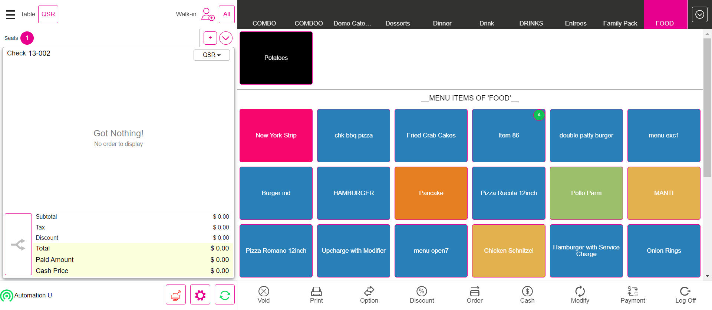

-
Basic Validation
12:48:58 PM / 31:53:491 Fail
Basic Validation
12.26.2023 12:48:58 12.26.2023 12:50:51 31:53:491 · #test-id=1FailMenu Option - Verify the Menu option for the all service type by menu level in order screenGiven I'm logged inAnd I closed the order type windowAnd I select FOOD as categoryAnd I select menu item as "Onion Rings"And I click menu item as "Onion Rings" to see Menu option screenAnd I click Fire to send menu item to kitchenAnd I click menu item as "Onion Rings" to see Menu option screenAnd I click void item on Menu optionThen I should see the void reason popupAnd I click void Reason on the void popupAnd I click Add Button on the void reason popupAnd I click Void button on order management screenThen I should see the void reason popupAnd I click void Reason on the void popupAnd I click Add Button on the void reason popupAnd I closed the order type windowAnd I select FOOD as categoryAnd I select menu item as "mongo test"And I click menu item as "mongo test" to see Menu option screenStep skippedAnd I click Repeat on menu optionStep skippedThen I should see Repeated menu item as "mongo test"Step skippedAnd I click menu item as "mongo test" to see Menu option screenStep skippedAnd I click Quantity on menu optionStep skippedAnd I click "3"Step skippedAnd I click the Continue buttonStep skippedThen I should see "3" is IncreasedStep skippedAnd I click menu item as "mongo test" to see Menu option screenStep skippedAnd I click Quantity on menu optionStep skippedAnd I click "1"Step skippedAnd I click the Continue buttonStep skippedThen I should see "1" is IncreasedStep skippedAnd I click menu item as "mongo test" to see Menu option screenStep skippedAnd I click Attach on menu optionStep skippedThen I should see Add Notes popupStep skippedAnd I click Add notes reason as "Spicy"Step skippedAnd I click Add Button on the void reason popupStep skippedThen I should see reason as "Spicy" on the Order screenStep skippedAnd I click Void button on order management screenStep skippedThen I should see All orders are voidedStep skippedAnd I click Done button on the PopupStep skippedAnd I select FOOD as categoryStep skippedAnd I select menu item as "mongo test"Step skippedAnd I click menu item as "mongo test" to see Menu option screenStep skippedAnd I click discount on menu optionStep skippedAnd I click discount as "IB-AfterTax-Amount" in discount windowStep skippedThen I verify discount as "IB-AfterTax-Amount" is applied or not in order screenStep skippedAnd I click Void button on order management screenStep skippedThen I should see All orders are voidedStep skippedAnd I click Done button on the PopupStep skippedAnd I select menu item as "mongo test"Step skippedAnd I click menu item as "mongo test" to see Menu option screenStep skippedAnd I click Open Item buttonStep skippedThen I should see open item screenStep skippedAnd I click Coursing Name text field for Menu optionStep skippedAnd I swipe to "DESSERT" as Coursing NameStep skippedAnd I pass course name as "fruits"Step skippedAnd I tap Price text field for menu optionStep skippedAnd I enter the price with saleStep skippedAnd I click Continue button on the Open Item Price numbers popupStep skippedAnd I click Done button on the open item windowStep skippedThen I should navigate to Order Management screen and see the added open item as "fruits"Step skippedAnd I click Void button on order management screenStep skippedThen I should see All orders are voidedStep skippedAnd I click Done button on the PopupStep skippedAnd I select menu item as "mongo test"Step skippedThen I should see orderscreen with menu item prize as "$ 10.00"Step skippedThen I should see the tax amount reflected to the check as "$ 1.20"Step skippedThen I should see orderscreen with menu item Total as "$ 11.20"Step skippedAnd I click menu item as "mongo test" to see Menu option screenStep skippedAnd I click Quantity on menu optionStep skippedAnd I click "2"Step skippedAnd I click the Continue buttonStep skippedThen I should see "2" is IncreasedStep skippedAnd I click menu item as "mongo test" to see Menu option screenStep skippedAnd I click Open Discount on menu optionStep skippedThen I should see Open discount ScreenStep skippedAnd I pass the amount on open discount for open item discount as discount Percentage1 for "After"Step skippedThen I should see discount applied on order screenStep skippedThen I should see orderscreen with menu item prize as "$ 20.00"Step skippedThen I should see the tax amount reflected to the check as "$ 2.40"Step skippedThen I should see the Discount amount reflected to the check as "$ 4.46"Step skippedThen I should see orderscreen with menu item Total as "$ 17.94"Step skippedAnd I click Void button on order management screenStep skippedThen I should see All orders are voidedStep skippedAnd I click Done button on the PopupStep skippedAnd I select menu item as "mongo test"Step skippedAnd I click menu item as "mongo test" to see Menu option screenStep skippedAnd I click Open Modifier on menu optionStep skippedThen I should see Open modifier ScreenStep skippedAnd I pass the Name as "fruits" and price on Open ModifierStep skippedThen I should see open modifier as "fruits" added on open modifiers screenStep skippedAnd I click Done button on the PopupStep skippedThen I should see modifier as "fruits" applied on order screenStep skippedAnd I click Void button on order management screenStep skippedThen I should see All orders are voidedStep skippedAnd I click Done button on the PopupStep skippedAnd I select menu item as "mongo test"Step skippedAnd I click menu item as "mongo test" to see Menu option screenStep skippedAnd I click change coursing on menu optionStep skippedAnd I swipe to "DESSERT" as Coursing NameStep skippedAnd I click Done button on the open item windowStep skippedThen I should see coursing name as "DESSERT"Step skippedAnd I click Void button on order management screenStep skippedThen I should see All orders are voidedStep skippedAnd I click Done button on the PopupStep skippedAnd I click log off button in order screenStep skippedcom.qa.stepdef.Hooks.quit(io.cucumber.java.Scenario)
-
org.openqa.selenium.NoSuchElementException
1 tests
org.openqa.selenium.NoSuchElementException
1 failedStatus Timestamp TestName Fail 12:50:44 PM And I select menu item as "mongo test" Basic Validation.Menu Option - Verify the Menu option for the all service type by menu level in order screen.And I select menu item as "mongo test"
-
@MainBAsic
1 tests
@MainBAsic
1 failedStatus Timestamp TestName Fail 12:48:58 PM Menu Option - Verify the Menu option for the all service type by menu level in order screen Basic Validation.Menu Option - Verify the Menu option for the all service type by menu level in order screen
Started
Dec 26, 2023 12:48:54 PM
Ended
Dec 26, 2023 12:50:51 PM
Features Passed
0
Features Failed
1
Features
Scenarios
Steps
Timeline
Tags
| Name | Passed | Failed | Skipped | Others | Passed % |
|---|---|---|---|---|---|
| @MainBAsic | 0 | 1 | 0 | 0 | 0% |